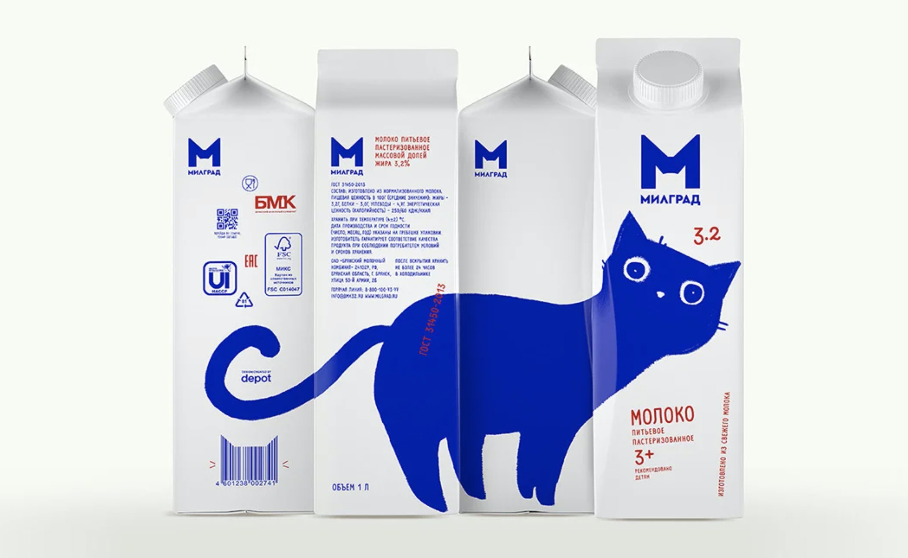
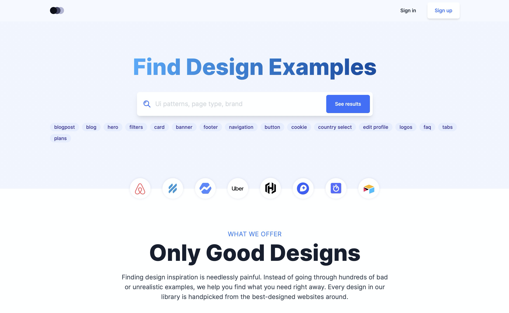
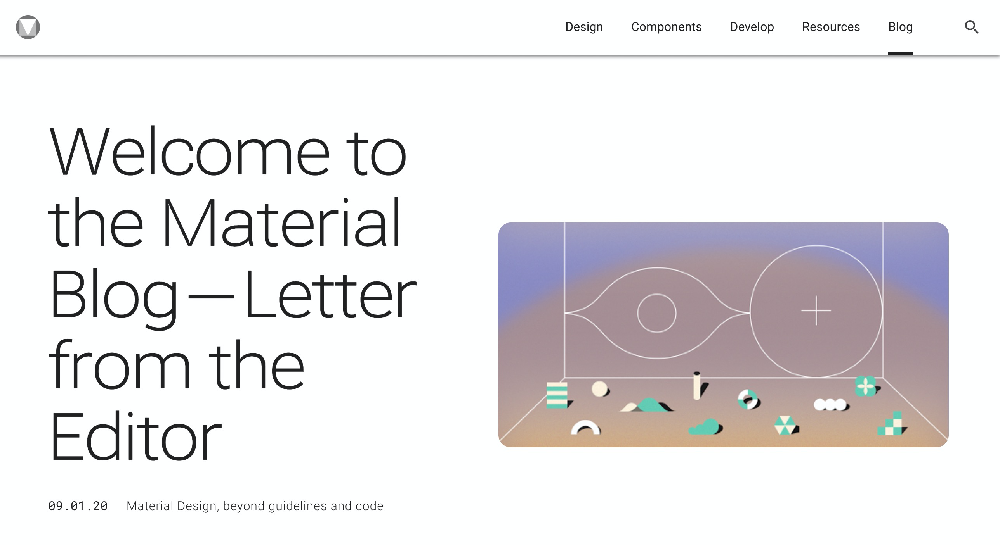
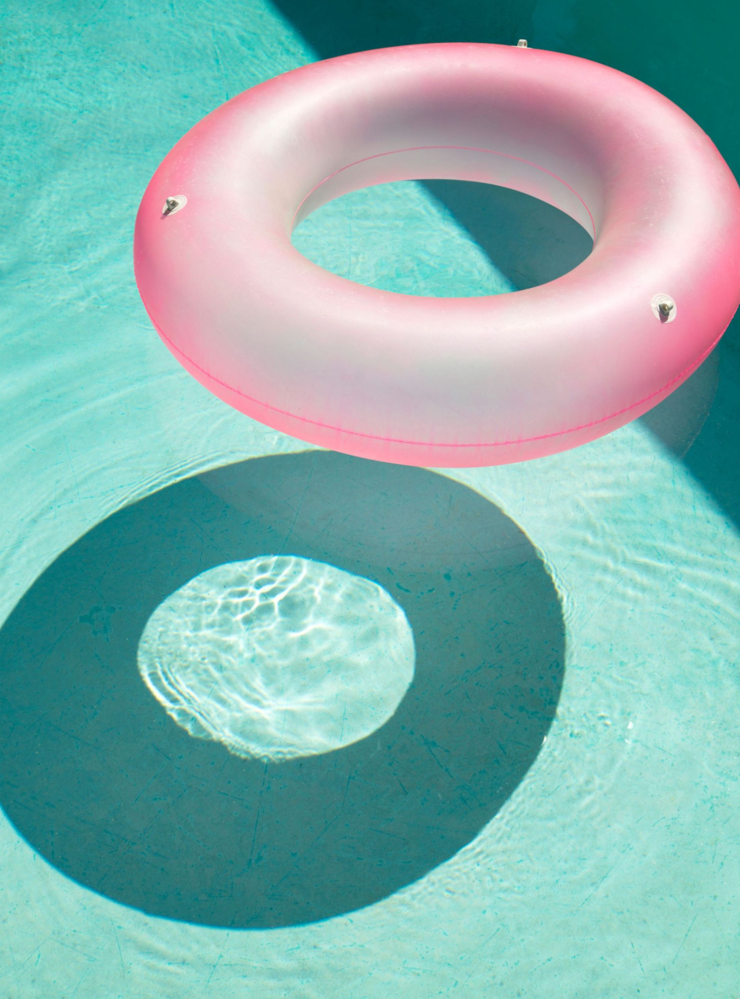
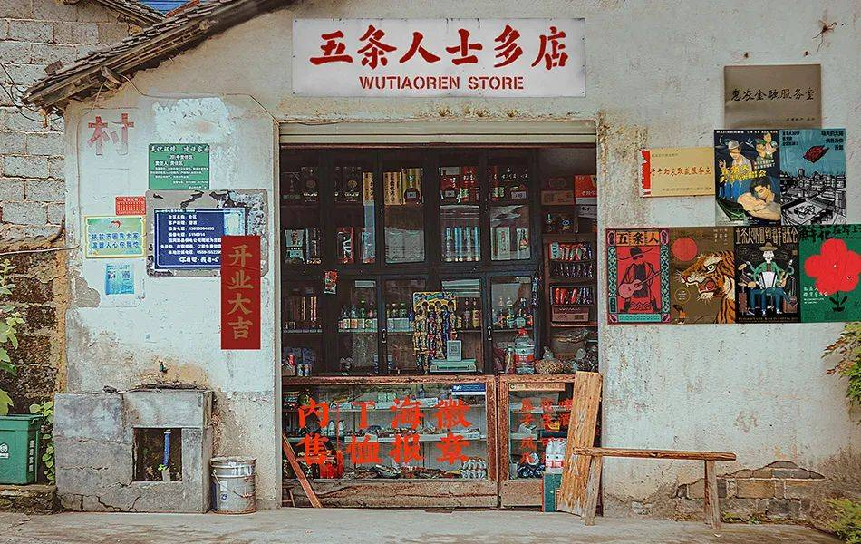

设计周刊 Design Weekly #24
Mon, Apr 20, 2020
🏷 设计灵感
这里有只可爱的蓝猫
https://www.designboom.com/design/blue-cat-milk-packaging-depot-09-03-2020
俄罗斯设计机构Depot为milgrad的bryansk乳品厂开发了新的品牌标识。此次设计目的是在乳品货架上脱颖而出，增加销售，扩大地域和销售渠道，同时展现幽默、善良和甜蜜的特点。在这次包装重新设计中，Depot创造了一只蓝猫，它在看着你哟~

🏷 设计资源
Lookup 精选优质资源网站
从精选的网站中寻找设计灵感和UI实例。

🏷 设计博客
Material 的新博客
Material 相关新闻、指南、更新等。

🏷 设计文章
视觉设计中的相似性原理
https://www.nngroup.com/articles/gestalt-similarity
来自尼尔森·诺曼集团 关于相似性原理的文章，在某种程度上看起来相似的设计元素（共享相同的颜色，形状或大小）被认为是相关的，而看起来不相似的元素则被认为属于不同的组。

🏷 随便看看
洗眼 | 走入一个糖果色的梦
https://www.topys.cn/article/30909.html
这个夏天一眨眼就过去了，你有留下糖果色的纪念吗？

🏷 又看了看
五条人士多店（士多音译自 store）
https://mp.weixin.qq.com/s/nmYJK-YaUDDSRmjY8DBkeg
最近五条人官宣五条人士多店开业
看似在贩卖五条人的周边
更多承载着五条人的足迹和音乐锚点
